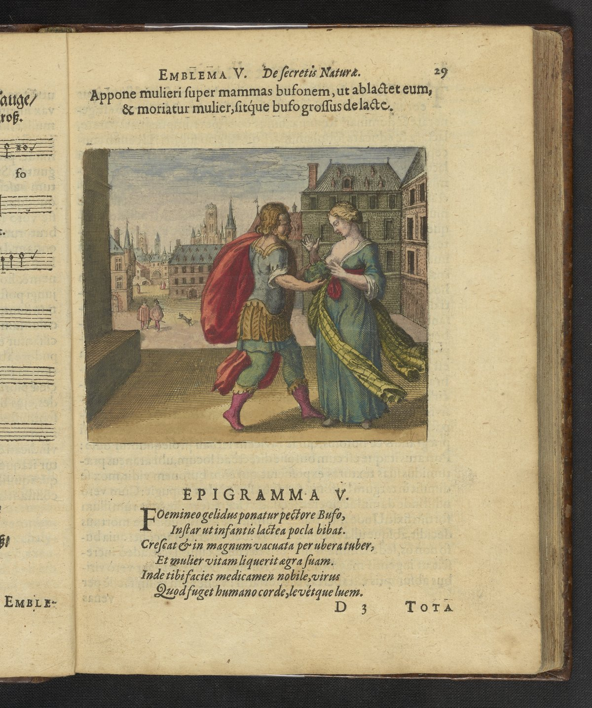

Nursing woman feeds a toad at her breasts. Transformation through feeding and depletion.
Put a toad to the breasts of a woman, that she may suckle it, and the woman may die and the toad grow big from the milk.
All thephilosophersagree that theirworkis nothingbutmen’s and women’swork; for itis manly tobeget and toruleover thewoman; and itis womanlytoconceive andtobepregnant, tobring forth, tofeed, andto submitto theman. Atfirstshe feeds her child with herblood, after that with her milk and, whenit gets bigger, with moresolidfood. It seemshorrible whenthephilosophers say thata womanshouldfeeda toad; it isa poisonous, hostile animal. Throughnursing the toad, the womandies and the toadbecomesbig. The woman diesin thesameway as Cleopatra did:because the toadpoison gets into her veins. In the Turbo, Theophilus men-tionsa woman, who isunited witha dragon(embl. L). Thewordsof thephilosophers about nursinga toadsoundcruel, but thepoisonous ‘ Ditto, like note3, andp. 292-294. 76EMBLEMv animal isthesonof thewoman, andtherefore, ofcourse, it must befed byhermilk. But how didshecome bysucha son? In hiscommentaries Guilielmus Novobrigensis, an English author, wrote—-may othersjudge howreliablehe is-——that, ina quarryin thebishopric of Vinton, alargest one wascleft, inwhichaliving toad withagold chain wasfound. Attheorderof thebishop, how-ever, hewaslocked ineternal darknessagain, becauseit was feared that t his was abadomen. In thesameway, thistoadis distinguishedby its gold; notartificially, on the outside, itis true, withagold chain, butattheinsidein a naturalway, like thestones Borax, Chelonite, Betrachite andothers. This toad, seen asast one, however, far surpassesthesesaid stonesin its acti...
Emblem V bears the motto: "Put a toad to the breasts of a woman, that she may suckle it, and the woman may die and the toad grow big from the milk."
All thephilosophersagree that theirworkis nothingbutmen’s and women’swork; for itis manly tobeget and toruleover thewoman; and itis womanlytoconceive andtobepregnant, tobring forth, tofeed, andto submitto theman. Atfirstshe feeds her child with herblood, after that with her milk and, whenit gets bigger, with moresolidfood. It seemshorrible whenthephilosophers say thata womanshouldfeeda toad; it isa poisonous, hostile animal. Throughnursing the toad, the womandies and the toadbecomesbig. The woman diesin thesameway as Cleopatra did:because the toadpoison gets into her veins.
De Jong's source-critical analysis identifies the textual traditions Maier draws upon for this emblem.
De Jong identifies the motto source as Pseudo-Aristotle, Tractatulus de Practica Lapidis. The discourse draws on alchemical sources: Lullius tradition (via Harmonica Chemica), Pseudo-Aristotle, Tractatulus de Practica Lapidis. The discourse draws on classical sources: Ovid, Metamorphoses X.560-704. The discourse draws on Hermetic sources: Tabula Smaragdina (Emerald Tablet).
H.M.E. de Jong: Four stages: decomposition, purification, formation into pliable substance (woman dies, toad grows), hardening into stone. Toad = earth, Woman = water. One nature coagulates only through dissolution of another. Catena Aurea linking microcosm to macrocosm.
Process: Coagulation (Coagulatio), Dissolution (Dissolutio), Solutio
Concept: Catena Aurea, Philosopher's Stone (Lapis Philosophorum), Solve et Coagula
Source_Text: Ars Magna, Tractatulus de Practica Lapidis (Tractatulus de Practica Lapidis Philosophici)
Four stages: decomposition, purification, formation into pliable substance (woman dies, toad grows), hardening into stone. Toad = earth, Woman = water. One nature coagulates only through dissolution of another. Catena Aurea linking microcosm to macrocosm.
Citation: Emblem V section